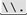
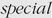
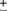
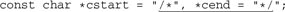

6.7. Unrolling the Loop
Regardless of what native optimizations a system may support, perhaps the most important gains are to be had by understanding the basics of how the engine works, and writing expressions that help lead the engine to a match. So, now that we've reviewed the basics in excruciating detail, let's step up to the big leagues with a technique I call "unrolling the loop."
It's effective for speeding up certain common expressions. Using it, for example, to transform the neverending match from near the start of this chapter (☞226) results in an expression that actually finishes a non-match in our lifetime, and as a bonus is faster with a match as well.
The "loop" in the name is the implicit loop imparted by the star in an expression that fits a  (this|that|⋯)* (this|that|⋯)* pattern. Indeed, our earlier "(\\.|[^\\"]+)*" never ending match fits this pattern. Considering that it takes approximately forever to report a non-match, it's a good example to try to speed up! pattern. Indeed, our earlier "(\\.|[^\\"]+)*" never ending match fits this pattern. Considering that it takes approximately forever to report a non-match, it's a good example to try to speed up!
There are two competing roads one can take to arrive at this technique:
Either way, the resulting expressions are identical. I'll begin from the "unrolling" point of view, and then converge on the same result from the higher-level view.
To keep the examples as uncluttered and as widely usable as possible, I'll use (⋯) for all parentheses. If (?:⋯) non-capturing parentheses are supported, their use imparts a further efficiency benefit. Later, we'll also look at using atomic grouping (☞139) and possessive quantifiers (☞142).
6.7.1. Method 1: Building a Regex From Past Experiences
In analyzing "(\\.|[^\\"]+)*", it's instructive to look at some matching strings to see exactly which subexpressions are used during the overall match. For example, with '"hi"', the expression effectively used is just "[^\\"]+". This illustrates that the overall match used the initial ", one application of the alternative [^\\"]+, and the closing ". With
"he said \"hi there\" and left"
it is "[^\\"]+". In this example, as well as in Table 6-2, I've marked the expressions to make the patterns apparent. It would be nice if we could construct a specific regex for each particular input string. That's not possible, but we can still identify common patterns to construct a more efficient, yet still general, regular expression.
For the moment, let's concentrate on the first four examples in Table 6-2. I've underlined the portions that refer to "an escaped item, followed by further normal characters." This is the key point: in each case, the expression between the quotes begins with [^\\"]+ and is followed by some number of  sequences. Rephrasing this as a regular expression, we get [^\\"]+()*. This is a specific example of a general pattern that can be used for constructing many useful expressions. sequences. Rephrasing this as a regular expression, we get [^\\"]+()*. This is a specific example of a general pattern that can be used for constructing many useful expressions.
Table 6-2. Unrolling-the-Loop Example CasesTarget String | Effective Expression |
|---|
"hi there" | "[^\\"]+" | "just one \" here" | "[^\\"]+" | "some \"quoted\" things" | "[^\\"]+" | "with \"a\" and \"b\"." | "[^\\"]+" | "\"ok\"\n" | "" | "empty \"\" quote" | |
6.7.1.1. Constructing a general "unrolling-the-loop" pattern
In matching the double-quoted string, the quote itself and the escape are "special"
the quote because it can end the string, and the escape because it means that whatever follows won't end the string. Everything else, [^\\"], is "normal." Looking at how these were combined to create [^\\"]+()*, we can see that it fits the general pattern normal+()*.
Adding in the opening and closing quote, we get "[^\\"]+( )*". Unfortunately, this won't match the last two examples in Table 6-2. The problem, essentially, is that our current expression's two [^\\"]+ require a normal character at the start of the string and after any special character. As the examples show, that's not always appropriatethe string might start or end with an escaped item, or there might be two escaped items in a row. )*". Unfortunately, this won't match the last two examples in Table 6-2. The problem, essentially, is that our current expression's two [^\\"]+ require a normal character at the start of the string and after any special character. As the examples show, that's not always appropriatethe string might start or end with an escaped item, or there might be two escaped items in a row.
We could try changing the two pluses to stars: "[^\\"]*()*". Does this have the desired effect? More importantly, does it have any undesirable effects?
As far as desirable effects, it is easy to see that all the examples now match. In fact, even a string such as "\"\"\"" now matches. This is good. However, we can't make such a major change without being quite sure there are no undesirable effects. Could anything other than a legal double-quoted string match? Can a legal double-quoted string not match? What about efficiency?
Let's look at "" carefully. The leading "[^\\"]* is applied only once and doesn't seem dangerous: it matches the required opening quote and any normal characters that might follow. No danger there. The subsequent ( [^\\"]*)* is wrapped by (⋯)*, so is allowed to match zero times. That means that removing it should still leave a valid expression. Doing so, we get "[^\\"]*", which is certainly fine it represents the common situation where there are no escaped items. [^\\"]*)* is wrapped by (⋯)*, so is allowed to match zero times. That means that removing it should still leave a valid expression. Doing so, we get "[^\\"]*", which is certainly fine it represents the common situation where there are no escaped items.
On the other hand, if ()* matches once, we have an effective "[^\\"]*". Even if the trailing [^\\"]* matches nothing (making it an effective "[^\\"]*"), there are no problems. Continuing the analysis in a similar way (if I can remember my high school algebra, it's "by induction"), we find that there are, indeed, no problems with the proposed changes.
So, that leaves us with the final expression to match a double-quoted string with escaped double quotes inside:
"[^\\"]*()*"
6.7.2. The Real "Unrolling-the-Loop" Pattern
Putting it all together, then, our expression to match a double-quoted string with escaped-items is "[^\\"]*()*". This matches and fails on exactly the same strings as the alternation version, but this unrolled version has the benefit of finishing in our lifetime. It is much more efficient, and avoids the neverending-match problem altogether.
The general pattern
for unrolling the loop is:
opening normal* ( normal*)* closing
6.7.2.1. Avoiding the neverending match
Three extremely important points prevent "[^\\"]*()*" from becoming a neverending match:
1) The start of special and normal must never intersect. The special and normal subexpressions must be written such that they can never match at the same point. With our ongoing example, where normal is [^\\"] and special is \\., it's clear that they can never begin a match at the same character since the latter one requires a leading backslash, while the former one explicitly disallows a leading backslash. On the other hand, \\. and [^"] can both match starting at '"Hello \n"', so they are inappropriate as special or normal. If there is a way they can match starting at the same location, it's not clear which should be used at such a point, and the non-determinism
creates a neverending match. The ' \n"', so they are inappropriate as special or normal. If there is a way they can match starting at the same location, it's not clear which should be used at such a point, and the non-determinism
creates a neverending match. The ' ' example illustrates this graphically (☞227). A failing match (or any kind of match attempt with POSIX NFA engines) has to test all these possibilities and permutations. That's too bad, since the whole reason to re-engineer in the first place was to avoid this. ' example illustrates this graphically (☞227). A failing match (or any kind of match attempt with POSIX NFA engines) has to test all these possibilities and permutations. That's too bad, since the whole reason to re-engineer in the first place was to avoid this. If we ensure that special and normal can never match at the same point, special acts to checkpoint
the nondeterminism that would arise when multiple applications of normal could, by different iterations of the (⋯)* loop, match the same text. If we ensure that special and normal can never match at the same point, there is exactly one "sequence" of specials and normals in which a particular target string matches. Testing this one sequence is much faster than testing a hundred million of them, and thus a neverending match is avoided. 2) Special must not match nothingness. The second point is that special must always match at least one character if it matches anything at all. If it were able to match without consuming characters, adjacent normal characters would be able to be matched by different iterations of ( normal* )*, bringing us right back to the basic (⋯*)* problem. For example, choosing a special of (\\.)* violates this point. In trying to match the ill-fated "[^\\"]*()*" against '"Tubby'
(which fails), the engine must try every permutation of how multiple [^\\"]* might match 'Tubby' before concluding that the match is a failure. Since special can match nothingness, it doesn't act as the checkpoint it purports to be. 3) Special must be atomic. Text matched by one application of special must not be able to be matched by multiple applications of special. Consider matching a string of optional Pascal {⋯} comments and spaces. A regex to match the comment part is \{[^}]*\}, so the whole (neverending) expression becomes (\{[^}]*\}|•+)*. With this regex, you might consider special and normal to be:
Plugging this into the normal*()* pattern we've developed, we get: (\{[^}]*\})*( )*. Now, let's look at a string: )*. Now, let's look at a string:
{comment}•••{another}••
A sequence of multiple spaces could be matched by a single •+, by many •+ (each matching a single space), or by various combinations of •+ matching differing numbers of spaces. This is directly analogous to our '' problem.
The root of the problem is that special is able to match a smaller amount of text within a larger amount that it could also match, and is able to do so multiple times thanks to (⋯)*. The nondeterminism
opens up the "many ways to match the same text" can of worms.
If there is an overall match, it is likely that only the all-at-once •+ will happen just once, but if no match is possible (such as might happen if this is used as a subexpression of a larger regex that could possibly fail), the engine must work through each permutation of the effective (•+)* to each series of multiple spaces. That takes time, but without any hope for a match. Since special is supposed to act as the checkpoint, there is nothing to check its nondeterminism in this situation.
The solution is to ensure that special can match only a fixed number of spaces. Since it must match at least one, but could match more, we simply choose • and let multiple applications of special match multiple spaces via the enclosing (⋯)*.
This example is useful for discussion, but in real-life use, it's probably more efficient to swap the normal and special expressions to come up with
because I would suspect that a Pascal program has more spaces than comments, and it's more efficient to have normal be the most common case.
6.7.2.2. General things to look out for
Once you internalize these rules (which might take several readings and some practical experience), you can generalize them into guidelines to help identify regular expressions susceptible to a neverending match. Having multiple levels
of quantifiers, such as (⋯*)*, is an important warning sign, but many such expressions are perfectly valid. Examples include:
These are OK because each has something to checkpoint the match, keeping a lid on the "many ways to match the same text" can of worms. In the first, it's Re:, in the second it's \$, and in the third (when dot doesn't match newline), it's \n.
6.7.3. Method 2: A Top-Down View
Recall that I said that there were two paths to the same "unrolling the loop" expression. In this second path, we start by matching only what's most common in the target, then adding what's needed to handle the rare cases. Let's consider what the neverending (|[^\\"]+)* attempts to accomplish and where it will likely be used. Normally, I would think, a quoted string would have more regular characters than escaped items, so [^\\"]+ does the bulk of the work. The \\. is needed only to handle the occasional escaped item. Using alternation to allow either works, but it's too bad that we need to compromise the efficiency of the whole match for the sake of a few (or more commonly, no) escaped characters.
If we think that [^\\"]+ will normally match most of the body of the string, we know that once it finishes we can expect either the closing quote or an escaped item. If we have an escape, we want to allow one more character (whatever it might be), and then match more of the bulk with another [^\\"]+. Every time [^\\"]+ ends, we are in the same position we were before: expecting either the closing quote or another escape.
Expressing this naturally as a single expression, we arrive at the same expression we had early in Method 1:
Each time the matching reaches the point marked by , we know that we're expecting either a backslash or a closing quote. If the backslash can match, we take it, the character that follows, and more text until the next "expecting a quote or backslash" point.
As in the previous method, we need to allow for when the initial non-quote segment, or inter-quote segments, are empty. We can do this by changing the two pluses to stars, which results in the same expression as we ended up with on page 264.
6.7.4. Method 3: An Internet Hostname
I promised two methods to arrive at the unrolling-the-loop technique, but I'd like to present something that can be considered a third. It struck me while working with a regex to match a hostname
such as www.yahoo.com. A hostname is essentially dot-separated lists of subdomain names, and exactly what's allowed for one subdomain name is fairly complex to match (☞203), so to keep this example less cluttered, we'll just use [a-z]+ to match a subdomain.
If a subdomain is [a-z]+ and we want a dot-separated list of them, we need to match one subdomain first. After that, further subdomains require a leading period. Expressing this literally, we get: [a-z]+(\.[a-z]+)*. Now, if I add an underline and some gray, [a-z]+()*, it sure looks like it almost fits a very familiar pattern, doesn't it!
To illustrate the similarity, let's try to map this to our double-quoted string example. If we consider a string to be sequences of our normal [^\\"], separated by special \\., all within '"⋯"', we can plug them into our unrolling-the-loop pattern to form "[^\\"]+()*", which is exactly what we had at one point while discussing Method 1. This means that conceptually, we can take the view we used with a hostnamestuff separated by separatorsand apply it to doublequoted strings, to give us "sequences of non-escaped stuff separated by escaped items." This might not seem intuitive, but it yields an interesting path to what we've already seen.
The similarity is interesting, but so are the differences. With Method 1, we went on to change the regex to allow empty spans of normal before and after each special, but we don't want to do that here because a subdomain part cannot be empty. So, even though this example isn't exactly the same as the previous ones, it's in the same class, showing that the unrolling technique is powerful and flexible.
There are two differences between this and the subdomain example:
Domain names don't have delimiters at their start and end. The normal part of a subdomain can never be empty (meaning two periods are not allowed in a row, and can neither start nor end the match). With a double-quoted string, there is no requirement that there be any normal parts at all, even though they are likely, given our assumptions about the data. That's why we were able to change the . We can't do that with the subdomain example because special represents a separator, which is required.
6.7.5. Observations
Recapping the double-quoted string example, I see many benefits to our expression, "[^\\"]*(\\.[^\\"]*)*", and few pitfalls.
Pitfalls: -
Benefits: -
Speed The new regex doesn't buckle under when no match is possible, or when used with a POSIX NFA. By carefully crafting the expression to allow only one way for any particular span of text to be matched, the engine quickly comes to the conclusion that non-matching text indeed does not match. More speed The regex "flows" well, a subject taken up in "The Freeflowing Regex" (☞277). In my benchmarks with a Traditional NFA, the unrolled
version is consistently faster than the old alternation version. This is true even for successful matches, where the old version did not suffer the lockup problem.
6.7.6. Using Atomic Grouping and Possessive Quantifiers
The problem with our original neverending match regex, "(\\.|[^\\"]+)*", is that it bogs down when there is no match. When there is a match, though, it's quite fast. It's quick to find the match because the [^\\"]+ component is what matches most of the target string (the normal in the previous discussion). Because [⋯]+ is usually optimized for speed (☞247), and because this one component handles most of the characters, the overhead of the alternation and the outer (⋯)* quantifier is greatly reduced.
So, the problem with "(\\.|[^\\"]+)*", is that it bogs down on a non-match, backtracking over and over to what we know will always be unfruitful states. We know they're unfruitful because they're just testing different permutations of the same thing. (If abc doesn't match 'foo', neither will abc or abc (or abc, abc, or abc, for that matter). So, if we could throw those states away, this regex would report the non-match quickly.
There are two ways to actually throw away (or otherwise ignore) states: atomic grouping (☞139) and possessive quantifiers (☞142).
Before I get into the elimination of the backtracking, I'd like to swap the order of the alternatives from "(\\.|[^\\"]+)*" to "([^\\"]+|\\.)*", as this places the component matching "normal" text first. As has been noted a few times in the last several chapters, when two or more alternatives can potentially match at the same location, care must be taken when selecting their order, as that order can influence what exactly is matched. But if, as in this case, all alternatives are mutually exclusive (none can match at a point where another can match), the order doesn't matter from a correctness point of view, so the order can be chosen for clarity or efficiency.
6.7.6.1. Making a neverending match safe with possessive quantifiers
Our neverending regex "([^\\"]+|\\.)*" has two quantifiers. We can make one possessive, the other possessive, or both possessive. Does it matter? Well, most of the backtracking troubles were due to the states left by the [⋯]+, so making that possessive is my first thought. Doing so yields a regex that's pretty fast, even when there's no match. However, making the outer (⋯)* possessive throws away all the states from inside the parentheses, which includes both those of [⋯]+ and of the alternation, so if I had to pick one, I'd pick that one.
But I don't have to pick one because I can make both possessive. Which of the three situations is fastest probably depends a lot on how optimized possessive quantifiers are. Currently, they are supported only by Sun's Java regex package, so my testing has been limited, but I've run all three combinations through tests with it, and found examples where one combination or the other is faster. I would expect the situation where both are possessive could be the fastest, so these results tend to make me believe that Sun hasn't yet optimized them to their fullest.
6.7.6.2. Making a neverending match safe with atomic grouping
Looking to add atomic grouping to "([^\\"]+|\\.)*", it's tempting to replace the normal parentheses with atomic ones: "(?>[^\\"]+|\\.)*". It's important to realize that (?>⋯|⋯)* is very different from the possessive (⋯|⋯)*+ in the previous section when it comes to the states that are thrown away.
The possessive (⋯|⋯)*+ leaves no states when it's done. On the other hand, the atomic grouping in (?>⋯|⋯)* merely eliminates any states left by each alternative, and by the alternation itself. The star is outside the atomic grouping, so is unaffected by it and still leaves all its "can try skipping this match" states. That means that the individual matches can still be undone via backtracking. We want to eliminate the outer quantifier's states as well, so we need an outer set of atomic grouping. That's why (?>(⋯|⋯)*) is needed to mimic the possessive (⋯|⋯)*+.
(⋯|⋯)*+ and (?>⋯|⋯)* are both certainly helpful in solving the neverending match, but which states are thrown away, and when, are different. (For more on the difference between the two, see page 173.)
6.7.7. Short Unrolling Examples
Now that we've got the basic idea of unrolling
under our belt, let's look at some examples from earlier in the book, and see how unrolling applies to them.
6.7.7.1. Unrolling "multi-character" quotes
In Chapter 4 on page 167, we saw this example:
<B> # Match the opening <B>
( # Now, as many of the following as possible ...
(?! </?B> ) # If not <B>, and not </B> ...
. # ... any character is okay
)* #(now greedy)
</B> #<ANNO> ... until the closing delimiter can match.
With a normal of [^<] and a special of (?!</?B>)<, here's the unrolled version:
<B> # Match the opening <B>
(?> [^<]*) # Now match any "normal" ...
(?> # Any amount of ...
(?! < /? B> ) # if not at <B> or </B>,
< # match one "special"
[^<]* # and then any amount of "normal"
)* #
</B> # And finally the closing </B>
The use of atomic grouping is not required, but does make the expression faster when there's only a partial match.
6.7.7.2. Unrolling the continuation-line example
The continuation-line example from the start of the previous chapter (☞186) left off with ^\w+=([^\n\\]|\\.)*. Well, that certainly looks ripe for unrolling:
^ \w+ = # leading field name and '='
# Now read (and capture) the value ...
(
(?> [^\n\\]* ) # "normal"*
(?> \\. [^\n\\]+ )* # ( "special" "normal"*)*
)
As with earlier examples of unrolling,
the atomic grouping
is not required for this to work, but helps to allow the engine to announce a failure more quickly.
6.7.7.3. Unrolling the CSV regex
Chapter 5 has a long discussion of CSV processing, which finally worked its way to this snippet, from page 216:
(?:^|,)
(?: # Now, match either a double-quoted field (inside, paired double
quotes are allowed) ...
" # (double-quoted field's opening quote)
( (?: [^"] | "" )* )
" # (double-quoted field's closing quote)
|
# ... or, some non-quote/non-comma text ...
( [^",]* )
)
The text then went on to suggest adding \G to the front, just to be sure that the bump-along didn't get us in trouble as it had throughout the example, and some other efficiency suggestions. Now that we know about unrolling, let's see where in this example we can apply it.
Well, the part to match a Microsoft CSV string, (?:[^"]|"")*, certainly looks inviting. In fact, the way it's presented already has our normal and special picked out for us: [^"] and "". Here's how it looks with that part unrolled, plugged back into the original Perl snippet to process each field:
while ($line =~ m{
\G(?:^|,)
(?:
# Either a double-quoted field (with "" for each ")⋯
" # field's opening quote
( (?> [^"]* ) (?> "" [^"]* )* )
" # field's closing quote
# ..or⋯
|
# ⋯ some non-quote/non-comma text....
( [^",]* )
)
}gx)
{
if (defined $2) {
$field = $2;
} else {
$field = $1;
$field =~ s/""/"/g;
}
print "[$field]"; # print the field, for debugging
Can work with $field now ...
}
As with the other examples, the atomic grouping is not required, but may help with efficiency.
6.7.8. Unrolling C Comments
I'd like to give an example of unrolling the loop with a somewhat more complex target. In the C language, comments begin with /*, end with */, and can span across lines, but can't be nested. (C++, Java, and C# also allow this type of comment.) An expression to match such a comment might be useful in a variety of situations, such as in constructing a filter to remove them. It was when working on this problem that I first came up with my unrolling technique, and the technique has since become a staple in my regex arsenal.
6.7.8.1. To unroll or to not unroll ...
I originally developed the regex that is the subject of this section back in the early 1990s. Prior to that, matching
C comments with a regular expression was considered difficult at best, if not impossible, so when I developed something that worked, it became the standard way to match C comments. But, when Perl introduced lazy quantifiers, a much simpler approach became evident: a dot-matches-all application of /\*.*?\*/.
Had lazy quantifiers been around when I first developed the unrolling technique, I might not have bothered to do so, for the need wouldn't have been so apparent. Yet, such a solution was still valuable because with that first version of Perl supporting lazy quantifiers, the unrolled version is faster than the lazy-quantifier version by a significant amount (in the variety of tests I've done, anywhere from about 50 percent faster, to 3.6x faster).
Yet, with today's Perl and its different mix of optimizations, those numbers go the other way, with the lazy-quantifier version running anywhere from about 50 percent faster to 5.5x faster. So, with modern versions of Perl, I'd just use /\*.*?\*/ to match C comments and be done with it.
Does this mean that the unrolling-the-loop technique is no longer useful for matching C comments? Well, if an engine doesn't support lazy quantifiers, the ability to use the unrolling technique certainly becomes appealing. And not all regex engines have the same mix of optimizations: the unrolling technique is faster with every other language I've testedin my tests, up to 60 times faster! The unrolling technique is definitely useful, so the remainder of this example explores how to apply it to matching C comments.
Since there are no escapes to be recognized within a C comment the way \* must be recognized within a double-quoted string, one might think that this should make things simpler, but actually, it's much more complex. This is because */, the "ending quote," is more than one character long. The simple /\*[^*]*\*/ might look good, but that doesn't match /** some comment here **/ because it has a '*' within. It should be matched, so we need a new approach.
6.7.8.2. Avoiding regex headaches
You might find that /\*[^*]*\*/ is a bit difficult to read, even with the subtle easy-on-the-eyes spacing I've used in typesetting this book. It is unfortunate for our eyes that one of the comment's delimiting characters, '*', is also a regex metacharacter. The resulting backslashes are enough to give me a headache. To make things more readable during this example, we'll consider /x ⋯ x/, rather than /* ⋯ */, to be our target comment. This superficial cosmetic change allows /\*[^*]*\*/ to be written as the more readable /x [^x]* x/. As we work through the example and the expression becomes more complex, our eyes will thank us for the reprieve.
6.7.8.3. A direct approach
In Chapter 5 (☞196), I gave a standard formula
for matching delimited text:
1. Match the opening delimiter. 2. Match the main text: really "match anything that is not the ending delimiter." 3. Match the ending delimiter.
Our pseudo comments, with /x and x/ as our opening and closing delimiters, appear to fit into this pattern. Our difficulties begin when we try to match "anything that is not the ending delimiter." When the ending delimiter is a single character, we can use a negated character class to match all characters except that delimiter. A character class can't be used for multi-character subexpressions, but if you have negative lookahead, you can use something like (?: (?! x/).)*. This is essentially (anything not x/)*.
Using that, we get /x(?: (?!x/).)*x/ to match comments. It works perfectly well, but it can be quite slow (in some of my tests, hundreds of times slower than what we'll develop later in this section). This approach can be useful, but it's of little use in this particular case because any flavor that supports lookahead almost certainly supports lazy quantifiers, so if efficiency is not an issue, you can just use /x.*?x/ and be done with it.
So, continuing with the direct, three-step approach, is there another way to match until the first x/? Two ideas might come to mind. One method is to consider x to be the start of the ending delimiter. That means we'd match anything not x, and allow an x if it is followed by something other than a slash. This makes the "anything that is not the ending delimiter" one of:
This yields ([^x]|x[^/])* to match the main text, and /x([^x]|x[^/])*x/ to match the entire pseudo comment. As we'll see, this doesn't work.
Another approach is to consider a slash as the ending delimiter, but only if preceded by x. This makes the "anything not the ending delimiter" one of:
This yields ([^/]|[^x]/)* to match the main text, and /x([^/]|[^x]/)*x/ to match the whole comment.
Unfortunately, it also doesn't work.
For /x([^x]|x[^/])*x/, consider the text '/xx•foo•xx/' after matching 'foo•', the first closing x is matched by , which is fine. But then, matches , which is the x that should be ending the comment. This opens the door for the next iteration's [^x] to match the slash, thereby errantly matching past the closing x/.
As for /x([^/]|[^x]/)*x/, it can't match '/x/•foo•/x/' (the whole of which is a comment and should be matched). In other cases, it can march past the end of a comment that has a slash immediately after its end (in a way similar to the other method). In such a case, the backtracking involved is perhaps a bit confusing, so it should be instructive to understand why /x([^/]|[^x]/)*x/ matches
as it does (an investigation I'll leave for your free time).
6.7.8.4. Making it work
Let's try to fix these regexes. With the first one, where x[^/] inadvertently matches the comment-ending ⋯x/, consider /x([^x]|x[^/])*x/. The added plus will, we think, have x+[^/] match a row of x's ending with something other than a slash. Indeed it will, but due to backtracking, that "something other than a slash" can still be x. At first, the greedy x+ matches that extra x as we want, but backtracking will reclaim an x if needed to secure an overall match. So, it still matches too much of:
The solution comes back to something I've said before: say what you mean.
If we want "some x, if not followed by a slash" to imply that the non-slash also doesn't include an x, we should write exactly that: x+[^/]. As we want, this stops it from eating '⋯xx/', the final x of a row of x that ends the comment. In fact, it has the added effect of not matching any comment-ending x, so it leaves us at '⋯xxx/' to match the ending delimiter. Since the ending delimiter part had been expecting just the one x, it won't match until we insert x / to allow this final case. / to allow this final case.
This leaves us with: /x([^x]|x+[^/x])*x+/ to match our pseudo comments. Phew! Somewhat confusing, isn't it? Real comments (with * instead of x) require /\*([^*]|\*+[^/*])*\*+/, which is even more confusing. It's not easy to read; just remember to keep your wits about you as you carefully parse complex expressions in your mind.
|
On page 273, when discussing two ways one might consider the C comment "anything that is not the ending delimiter," I presented one idea as
" x, so long as not followed by a slash: x[^/] "
and another as:
" a slash, so long as not preceded by x: [^x]/ "
In doing so, I was being informalthe English descriptions are actually quite different from the regexes. Do you see how?
To see the difference, consider the first case with the string 'regex' it certainly has an x not followed by a slash, but it would not be matched by match x[^/]. The character class requires a character to match, and although that character can't be a slash, it still must be something, and there's nothing after the x in 'regex'. The second situation is analogous. As it turns out, what I need at that point in the discussion are those specific expressions, so it's the English that is in error.
If you have lookahead, "x, so long as not followed by a slash" is simply x(?!/). If you don't, you might try to get by with x([^/]|$). It still matches a character after the x, but can also match at the end of the line. If you have lookbehind, "slash, so long as not preceded by x" becomes (?<!x)/. If you don't have it, you have to make due with (^|[^x])/.
We won't use any of these while working with C comments, but it's good to understand the issue.
|
6.7.8.5. Unrolling the C loop
For efficiency's sake, let's look at unrolling
this regex. Table 6-3 on the next page shows the expressions we can plug in to our unrolling-the-loop pattern.
Like the subdomain example, the normal* is not actually free to match nothingness. With subdomains, it was because the normal part was not allowed to be empty. In this case, it's due to how we handle the two-character ending delimiter. We ensure that any normal sequence ends with the first character of the ending delimiter, allowing special to pick up the ball only if the following character does not complete the ending.
Table 6-3. Unrolling-the-Loop Components for C Commentsopening normal* ()* closing |
|---|
Item | What We Want | Regex |
|---|
opening | start of comment | /x | normal* | comment text up to, and including, one or more 'x' | [^x]*x+ | special | something other than the ending slash (and also not 'x') | [^/x] | closing | trailing slash | / |
So, plugging these in to the general unrolling pattern, we get:
/x[^x]*x+()*/.
Notice the spot marked with ? The regex engine might work to that spot in two ways (just like the expression on page 267). The first is by progressing to it after the leading /x[^x]*x+. The second is by looping due to the (⋯)*. Via either path, once we're at that spot we know we've matched x and are at a pivotal point, possibly on the brink of the comment's end. If the next character is a slash, we're done. If it's anything else (but an x, of course), we know the x was a false alarm and we're back to matching normal stuff, again waiting for the next x. Once we find it, we're right back on the brink of excitement at the marked spot.
6.7.8.6. Return to reality
/x[^x]*x+([^/x][^x]*x+)*/ is not quite ready to be used. First, of course, comments are /* ⋯ */ and not /x ⋯ x/. This is easily fixed by substituting each x with \* (or, within character classes, each x with *) :
/\*[^*]*\*+([^/*][^*]*\*+)*/
A use-related issue is that comments often span across lines. If the text being matched contains the entire multiline comment, this expression should work. With a strictly line-oriented tool such as egrep, though, there is no way to apply a regex to the full comment. With most utilities mentioned in this book, you can, and this expression might be useful for, say, removing comments.
In practical use, a larger problem arises. This regex understands C comments, but does not understand other important aspects of C syntax. For example, it can falsely match where there is no comment:

We'll develop this example further, right in the next section.
|